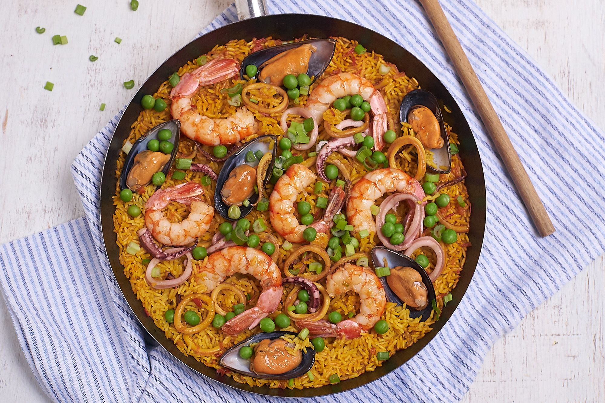

¿Qué es una paella?
Los orígenes de la paella son antiguos, tienen sus raíces en los alrededores de Valencia (España), cerca de la laguna de la Albufera, donde tanto la pesca como el cultivo del arroz dominaron la región durante siglos.
La paella era la comida de los trabajadores agrícolas que cocinaban platos de arroz sobre fuegos de leña, adornados con cualquier ingrediente que pudieran encontrar.
El plato lleva el nombre de la sartén ancha y poco profunda en la que se cocina la paella. La palabra "paella" proviene de un dialecto valenciano que significa "pan", probablemente derivada de la palabra latina "patella" para pan.
Ingredientes
2 tazas de arroz
4 tazas de caldo de gambas
1/2 kg de calamares
1/2 kg de gambas frescas
1 puñado de conchas de mar almejas y mejillones
1 cebolla
1 tomate mediano
1/2 pimiento rojo
2 dientes de ajo
1/2 taza de guisantes
1 ramo de hojas de perejil fresco
Aceite de oliva
Sal
Pimienta
Colorante amarillo ó algunas hebras de azafrán
Elaboración paso a paso
Limpia y pela las gambas. Usa las conchas y las cabezas para hacer el caldo. Resérvalo.
También limpia los calamares y pícalos en rodajas.
Limpia también las conchas de mar con abundante agua para que suelten cualquier residuo de arena.
En una paellera o en un sartén grande, sofríe en aceite de oliva, la cebolla, el ajo, pimiento y tomate picados en cuadritos pequeños. Añade un poco de pimienta y sal.
Pon los calamares y luego las conchas de mar. Deja que se cocinen unos minutos hasta hacerse un caldo
Agrega las 2 tazas de arroz y revuelve para que se mezcle todo. Seguidamente ponle 4 tazas del caldo de gambas que hiciste anteriormente. Si no te alcanza, completalo con agua.
Revuelve bien. Agrega una cucharadita de colorante amarillo o las hebras de azafrán y deja hervir por unos 3 minutos.
Aun con líquido en la paellera, agrega los guisantes frescos, las gambas y el perejil previamente picado muy pequeñito. Chequea la sal y la pimienta y agrega si fuera necesario.
Deja cocinar hasta que esté casi seco el líquido. En este momento puedes ponerle unas tiras de pimiento para decorar y algunos langostinos.
Cocine a fuego lento tapado.
Deja cocinar por unos 15 minutos y prueba el arroz. Si está listo retira del fuego y sirve tu paella de marisco con un chorro de aceite de oliva por encima para darle aun más sabor.
Paella de marisco: Algunos tips
Las gambas deben ser frescas y tener su piel y cabeza, porque las vas a necesitar para hacer uno de los ingredientes clave de esta paella de marisco: el caldo que vas a usar para cocinar el arroz. Este líquido es tan importante como los demás ingredientes.
El característico color de la paella de marisco tradicionalmente se le da agregándole algunas hebras de azafrán, si en tu ciudad es difícil conseguirlo, sustitúyelo por colorante amarillo.
Los frutos de mar a utilizar en la elaboración de este plato pueden variar, no es necesario que uses los que te indico en esta receta. Dependiendo de la disponibilidad en tu región, utiliza unos u otros. Lo que sí te recomiendo es que no dejes de agregarle gambas o langostinos.
Si tienes posibilidad de ponerle trozos de cangrejo ¡hazlo! La cantidad de sabor que da es impresionante, además tu paella de marisco luciría espectacular. En caso de utilizarlos, agrégalos junto con los calamares y las conchas durante la cocción.
Al momento de servirla en el plato, algunas personas le ponen un chorro de jerez y otras limón. Lo más recomendado es aceite de oliva.
